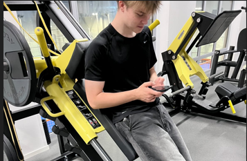
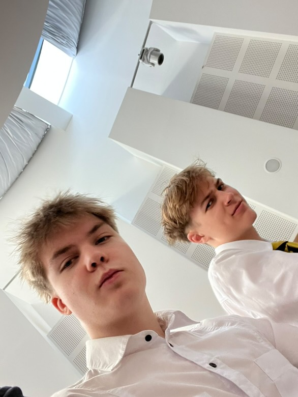
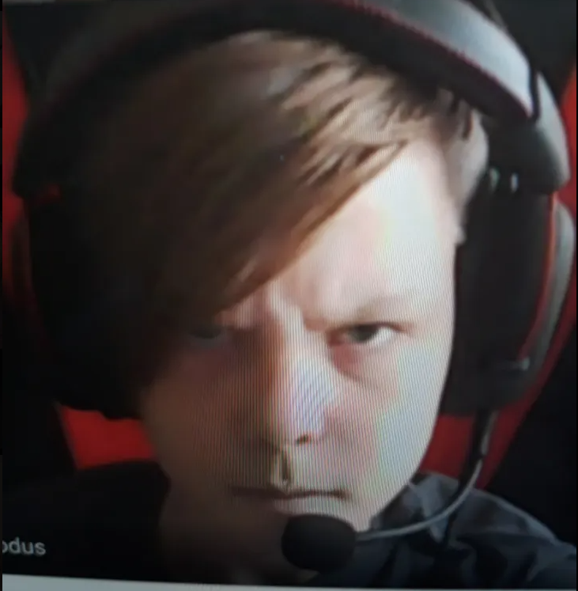
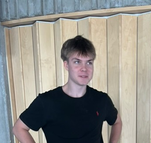
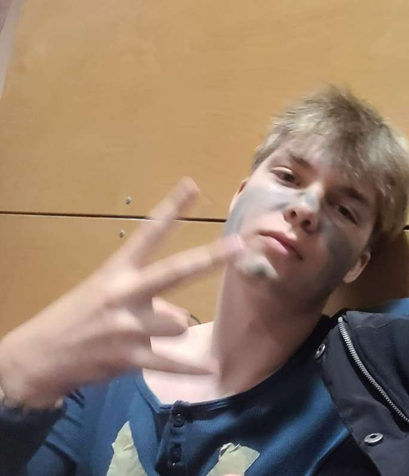
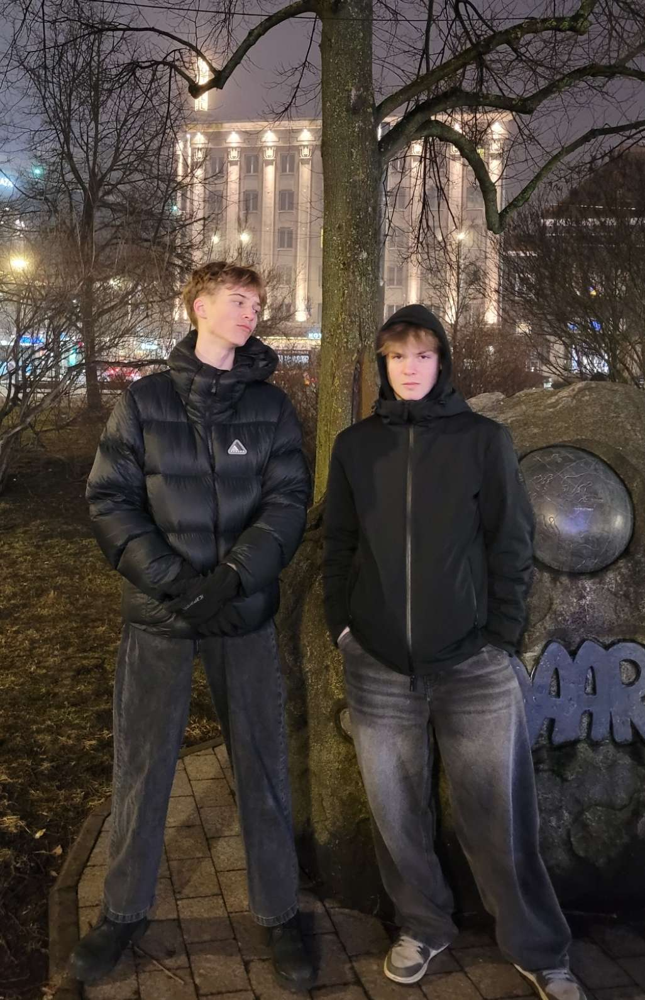

Moments of Me
A small selection of photos and memories showing what I do and how life goes.

At the Gym
The gym is my second home – it's where I solve problems, improve my fitness, and recharge my batteries for the day. Every workout is an opportunity to challenge myself and get better. Sometimes I also spend time on my phone there.

Time with Friends
The best moments are when I can be with my friends. Whether it's exercising together, playing games, or just chatting - these moments make life worthwhile.

Gaming
Computer games are my way of relaxing and seeking challenges. Strategy games provide tension and interest. I'm often on the Nft Animation server and play CS2 with my friends.

Training
Training is not just an exercise – it’s a lifestyle. Every day in the boxing gym makes me stronger both physically and mentally. Discipline and consistency are the keys to success (although I often forget this).

School Life
If I'm not at the gym or with my friends, I'm probably at school. 10th grade brings a lot of studying (thanks Tanel for helping me), but also fun and memorable moments with my classmates. The best moments of my life have come with my school friends.

New Challenges
I like to try new things and take on challenges. Whether it's a new workout, game, or something else - every new experience teaches something valuable and makes life more interesting.
I'm always up for a challenge!